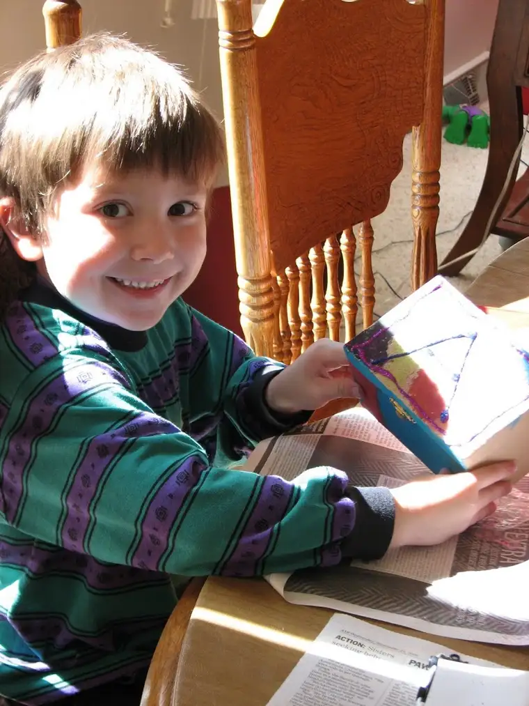

{kind=link}
{kind=link}
My friend K. deplores coloring books. She says it stifles creativity. When her kids were young, she would make them “glurch” (a gooey mixture that allows for textural fun), play “library checkout” with them and let them “paint” designs on cookies with colored frosting. I’ve always admired that about her and have tried to offer my kids some of the same kinds of ideas for creative play. Growing up, there were times I actually liked coloring within the lines, but I agree with my friend that the challenge of a blank piece of paper and some markers, glue and glitter presents a much more interesting, “out of the box” outcome than a prefabricated coloring sheet.
Last weekend, another friend was de-cluttering and found some craft projects she felt her kids had outgrown, so she threw them in a bag and sent them home with me. During a lull in our cleaning day Saturday, I brought out the craft boxes and let the kids go at it. Thankfully, my girls enjoy creative challenges and helped my little boys with their projects. Unlike in the old days, I really didn’t even have to supervise, though I would pop in every now and again to see how things were going (and check whether the glue pouring had gotten out of hand).
It would have been easier to keep the project in the bag and store it away in a closet for some undefined future time. I would have avoided the resulting mess. But my kids would have missed out on a great activity. Every once in a while, when the circumstances seem right, offering up a few creative tools to get the kids’ imaginations going feels good. It’s the opposite feeling of the one I get when I allow my kids too much time in front of a screen (TV, computer or hand-held games). Honestly, I got as much pleasure out of seeing what they would do with those blank boxes as they seemed to get from the chance to be thinking up their own patterns and designs. For that 45 minutes, they were fully absorbed in the task at hand. It mellowed moods and helped the day go more smoothly.
As for what treasures they’ll store in their boxes, only the shadow knows… 
{kind=link}
{kind=link}